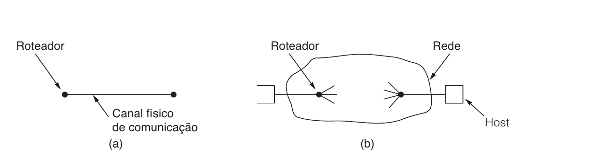
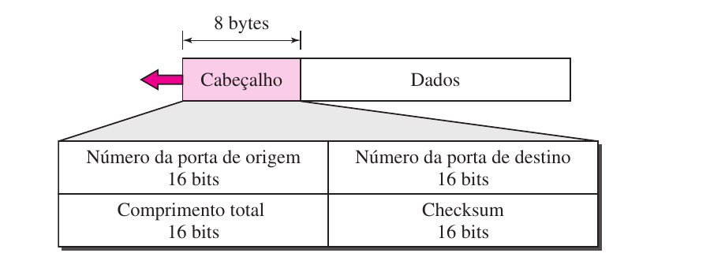
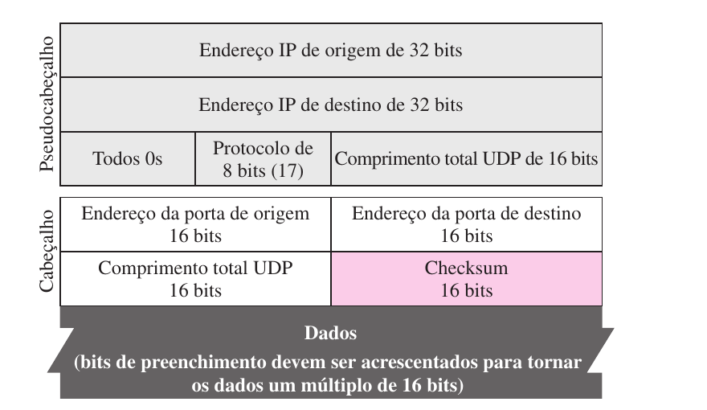
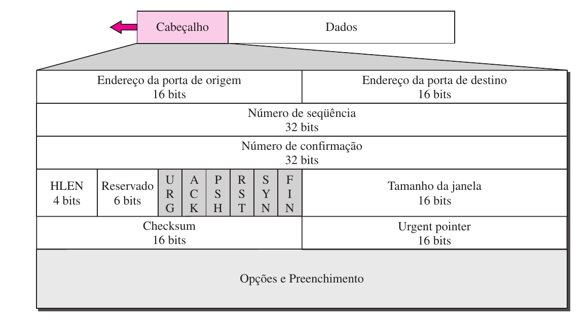
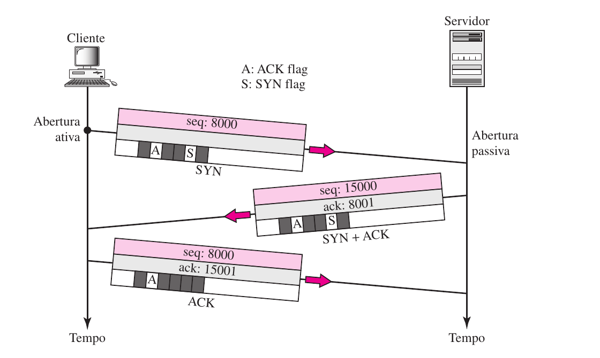
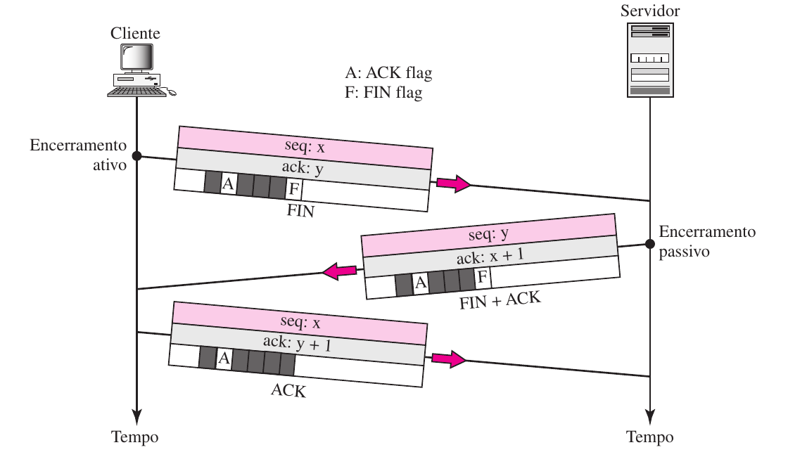
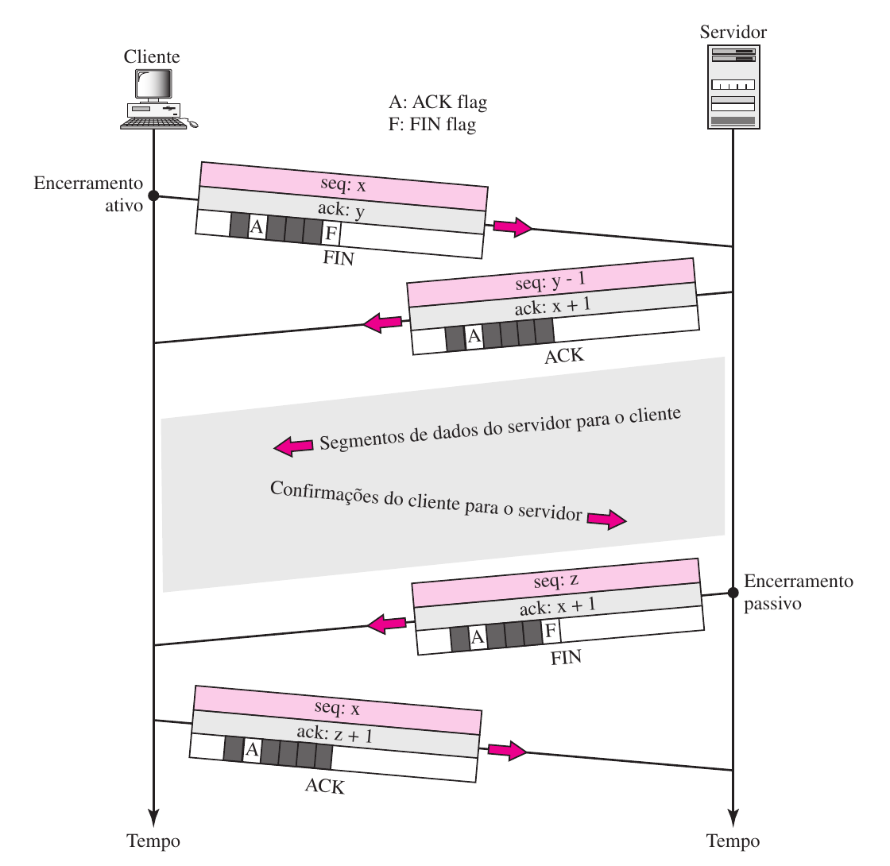

Introdução10.1
Hoje você vai ver por que a comunicação na Internet não termina quando um pacote IP chega ao host correto. A camada de rede entrega pacotes entre máquinas, mas uma máquina executa muitos programas ao mesmo tempo. O problema da camada de transporte é levar os dados ao processo correto e, quando necessário, transformar uma rede de melhor esforço em uma comunicação confiável.
Na aula anterior, o IP apareceu como um protocolo sem conexão e de melhor esforço. Isso é suficiente para encaminhar datagramas entre redes, mas não garante entrega, ordem, ausência de duplicação nem controle de velocidade. A camada de transporte existe justamente acima desse ponto frágil.
A camada de transporte oferece comunicação processo a processo. O UDP faz isso com mínimo controle e baixo overhead. O TCP faz isso criando uma conexão virtual, numerando bytes, confirmando dados, controlando fluxo e reagindo a perdas e congestionamento.
Esta aula usa como base o Forouzan, capítulo 23, páginas 703 a 735, excluindo a parte de SCTP, e o Tanenbaum, capítulo 6, principalmente as seções 6.1 a 6.5, páginas 310 a 365.
Mapa de leitura dos livros10.2
Antes de entrar nos detalhes, vale deixar claro de onde a aula está saindo nos dois livros.
No Forouzan, o capítulo 23 aparece dentro da parte de Camada de Transporte e se chama Comunicação entre Processos: UDP, TCP e SCTP. Para esta aula, usamos as seções 23.1 a 23.3.
| Fonte | Trecho usado | Páginas do livro | Assunto |
|---|---|---|---|
| Forouzan | 23.1 | 703 a 708 | Comunicação entre processos, cliente/servidor, multiplexação, demultiplexação e serviços |
| Forouzan | 23.2 | 709 a 715 | UDP, portas, datagrama, checksum e operação |
| Forouzan | 23.3 | 715 a 735 | TCP, fluxo de bytes, segmento, conexão, fluxo, erro e congestionamento |
No Tanenbaum, o capítulo 6 se chama A camada de transporte. Ele organiza a discussão de forma mais conceitual, começando pelo serviço de transporte e depois entrando nos elementos que qualquer protocolo de transporte precisa resolver.
| Fonte | Trecho usado | Páginas do livro | Assunto |
|---|---|---|---|
| Tanenbaum | 6.1 | 310 a 318 | Serviço de transporte, primitivas e sockets |
| Tanenbaum | 6.2 | 318 a 333 | Endereçamento, estabelecimento, encerramento, erro, fluxo e multiplexação |
| Tanenbaum | 6.3 | 333 a 340 | Controle de congestionamento |
| Tanenbaum | 6.4 | 340 a 346 | UDP e protocolos relacionados |
| Tanenbaum | 6.5 | 347 a 365 | TCP, cabeçalho, conexão, janela e congestionamento |
O SCTP aparece no Forouzan e as seções 6.6 e 6.7 aparecem no Tanenbaum, mas ficam fora do foco de hoje. O objetivo aqui é dominar UDP e TCP como transportes essenciais da Internet.
O problema que a camada de transporte resolve10.3
Imagine que seu computador esteja acessando uma página Web, sincronizando arquivos, recebendo mensagens e fazendo uma consulta DNS quase ao mesmo tempo. Do ponto de vista da camada de rede, todos esses dados chegam ao mesmo endereço IP da sua máquina. Mas isso não basta.
O IP identifica o host. Ele não identifica diretamente qual processo deve receber cada pedaço de dado. Sem a camada de transporte, o sistema operacional receberia pacotes IP e ainda teria de adivinhar se aquele conteúdo pertence ao navegador, ao cliente de e-mail, ao serviço de sincronização ou a outro programa.
Se o endereço IP identifica a máquina de destino, qual informação falta para entregar o dado ao programa correto dentro dessa máquina?
Falta o endereço da camada de transporte. Na Internet, esse endereço é o número de porta. O par formado por endereço IP e porta identifica um ponto de comunicação em um host.
Forouzan apresenta essa diferença como três níveis de comunicação.
| Camada | Unidade de entrega | Tipo de comunicação |
|---|---|---|
| Enlace | Quadro | Nó a nó |
| Rede | Datagrama ou pacote | Host a host |
| Transporte | Segmento ou datagrama de usuário | Processo a processo |
O Tanenbaum reforça a mesma ideia por outro caminho. A camada de transporte roda nas máquinas finais e pode compensar limitações da camada de rede. Se a rede perde, atrasa, duplica ou reordena pacotes, a entidade de transporte pode implementar mecanismos para tornar o serviço mais adequado às aplicações.

A figura do Tanenbaum ajuda a visualizar a mudança de ambiente. Na camada de enlace, dois dispositivos vizinhos conversam por um canal físico direto. Na camada de transporte, as pontas conversam através de uma rede inteira, com roteadores, filas, caminhos alternativos, perdas e atrasos.
Por isso, problemas que eram simples no enlace ficam mais difíceis no transporte. Não basta saber que há um vizinho do outro lado do fio. É preciso endereçar processos, abrir conexões quando necessário, detectar duplicatas antigas, lidar com perda e decidir quanto enviar sem destruir o receptor ou congestionar a rede.
Considere um notebook com o endereço IP 192.168.1.20. Ele executa três aplicações ao mesmo tempo.
| Aplicação | Protocolo típico | Porta de destino remota |
|---|---|---|
| Navegador acessando Web | TCP | 443 |
| Consulta DNS | UDP | 53 |
| Sincronização de horário | UDP | 123 |
Todos os pacotes podem sair do mesmo IP de origem, mas eles não pertencem ao mesmo processo. A camada de transporte separa essas conversas usando portas de origem e destino.
O exemplo mostra que o IP coloca o pacote no host correto. A porta ajuda a colocá-lo no processo correto.
Portas, multiplexação e demultiplexação10.4
Um número de porta tem 16 bits. Portanto, os valores possíveis vão de 0 a 65.535. Em uma comunicação cliente-servidor, o servidor normalmente usa uma porta conhecida, enquanto o cliente usa uma porta temporária, também chamada porta efêmera.
Essa separação resolve um problema prático. O cliente precisa saber onde encontrar o serviço. Por isso, serviços padronizados costumam usar portas bem conhecidas. Já o cliente só precisa de uma identificação temporária para receber a resposta.
| Porta | Serviço comum | Transporte usual |
|---|---|---|
| 20 e 21 | FTP | TCP |
| 22 | SSH | TCP |
| 25 | SMTP | TCP |
| 53 | DNS | UDP ou TCP |
| 80 | HTTP | TCP |
| 123 | NTP | UDP |
| 443 | HTTPS | TCP |
A porta não identifica uma máquina. Quem identifica a máquina é o endereço IP. A porta identifica um ponto de comunicação dentro da máquina.
Multiplexar na origem, demultiplexar no destino10.4.1
Na origem, vários processos podem querer enviar dados pela rede. A camada de transporte recebe dados desses processos, coloca cabeçalhos com portas e entrega os segmentos ou datagramas ao IP. Esse lado é a multiplexação.
No destino, acontece o inverso. A camada de transporte recebe dados vindos do IP, observa as portas no cabeçalho e entrega o conteúdo ao processo adequado. Esse lado é a demultiplexação.
Um cliente com IP 10.0.0.8 acessa um servidor HTTPS 200.10.1.5.
Origem: 10.0.0.8:53144
Destino: 200.10.1.5:443
O servidor responde invertendo os papéis.
Origem: 200.10.1.5:443
Destino: 10.0.0.8:53144
A porta 443 diz ao cliente qual serviço foi acessado no servidor. A porta 53144 permite que a resposta volte para a conversa correta no cliente.
Suponha que duas abas do navegador acessem o mesmo servidor 200.10.1.5:443 ao mesmo tempo.
Aba 1: 10.0.0.8:53144 -> 200.10.1.5:443
Aba 2: 10.0.0.8:53145 -> 200.10.1.5:443
O IP de origem e o IP de destino são iguais. A porta de destino também é igual. O que diferencia as duas conversas é a porta de origem escolhida no cliente. Assim, quando as respostas chegam, o sistema operacional consegue associar cada fluxo ao socket correto.
UDP como transporte mínimo10.5
O UDP, ou User Datagram Protocol, é o protocolo de transporte mais simples da Internet. Ele oferece comunicação processo a processo usando portas, mas quase não acrescenta controle ao serviço do IP.
O UDP é sem conexão. Isso significa que ele não estabelece uma conexão antes de enviar dados. Cada datagrama UDP é independente.
O UDP também é não confiável no sentido técnico. Ele não confirma recebimento, não retransmite perdas, não reordena datagramas e não controla a velocidade do emissor. Isso não significa que ele seja inútil. Significa que ele deixa essas responsabilidades para a aplicação quando elas forem necessárias.
Se o UDP não garante entrega, por que protocolos importantes como DNS, NTP e SNMP podem usá-lo?
Porque nem toda aplicação precisa do mesmo tipo de garantia dentro da camada de transporte. Uma consulta curta pode ser repetida pela própria aplicação. Uma aplicação em tempo real pode preferir perder uma pequena parte do áudio a esperar uma retransmissão atrasada. Um protocolo simples pode ganhar desempenho evitando o custo de uma conexão TCP.
O cabeçalho UDP10.5.1
O cabeçalho UDP tem apenas 8 bytes.
| Campo | Tamanho | Função |
|---|---|---|
| Porta de origem | 16 bits | Identifica o processo de origem |
| Porta de destino | 16 bits | Identifica o processo de destino |
| Comprimento | 16 bits | Informa o tamanho do datagrama UDP completo |
| Checksum | 16 bits | Detecta erros no cabeçalho e nos dados |
O campo de checksum usa também um pseudocabeçalho com informações do IP, como endereços de origem e destino e o número do protocolo. A razão é importante. O UDP precisa detectar não apenas erros no conteúdo UDP, mas também situações em que o datagrama poderia ser entregue ao host ou protocolo errado.

Os campos são pequenos e o formato é enxuto. A porta de origem pode ser zero se o transmissor não esperar resposta. A porta de destino é essencial para a demultiplexação. O comprimento mínimo é 8 bytes (só cabeçalho, sem dados).
O checksum do UDP inclui também um pseudocabeçalho com campos do IP.

A inclusão do pseudocabeçalho é uma defesa contra erros de roteamento. Se o datagrama IP for entregue ao host errado, o checksum detectará a inconsistência entre os endereços IP do pseudocabeçalho e o que o host realmente recebeu.
O que o UDP não faz10.5.2
O UDP não cria relação entre datagramas sucessivos. Se uma aplicação envia três mensagens, o UDP não trata isso como um fluxo único. São três datagramas independentes.
Isso tem consequências diretas.
| Necessidade | UDP faz sozinho? | Consequência |
|---|---|---|
| Estabelecer conexão | Não | Envia sem handshake |
| Confirmar recebimento | Não | A aplicação deve confirmar, se precisar |
| Retransmitir perda | Não | A aplicação deve retransmitir, se precisar |
| Ordenar dados | Não | Datagramas podem chegar fora de ordem |
| Controlar fluxo | Não | O receptor pode ser sobrecarregado |
| Detectar erro simples | Sim, quando o checksum é usado | No IPv4 o checksum UDP pode ser zero; no IPv6 ele é obrigatório |
Uma aplicação envia uma consulta DNS para descobrir o endereço IP de example.com.
- O cliente envia uma pequena pergunta UDP para a porta 53 do servidor DNS.
- O servidor responde com um pequeno datagrama UDP.
- Se a resposta não chegar, o cliente pode tentar novamente.
Esse padrão combina bem com UDP porque a interação é curta. Não faria tanto sentido estabelecer uma conexão completa apenas para uma pergunta e uma resposta simples.
Imagine uma chamada de voz. Se um pequeno pacote de áudio se perde, retransmiti-lo muito tarde pode piorar a experiência, porque aquele som já passou do momento de reprodução.
Nesse caso, a aplicação pode preferir continuar com os próximos pacotes. O UDP combina com esse cenário porque não força retransmissões e não bloqueia a entrega esperando o dado perdido.
O exemplo não significa que toda aplicação de mídia seja “sem controle”. Significa que o controle pode ser feito em outro nível, com lógica própria para tempo real.
TCP como fluxo confiável de bytes10.6
O TCP, ou Transmission Control Protocol, resolve um problema diferente. Ele foi projetado para oferecer um fluxo de bytes fim a fim confiável sobre uma rede IP que pode perder, atrasar, duplicar ou reordenar datagramas.
O TCP é orientado a conexão. Antes da transferência de dados, as duas pontas estabelecem uma conexão virtual. Depois, os dados fluem. Ao final, a conexão é encerrada.
Essa conexão não é um fio físico reservado. Ela é um estado mantido nas pontas. O IP continua encaminhando datagramas individualmente. O TCP é quem numera bytes, confirma recebimentos, retransmite perdas e entrega os dados em ordem para a aplicação.

O cabeçalho TCP é maior que o cabeçalho UDP porque carrega mais responsabilidade. Além das portas, ele precisa de números de sequência, números de confirmação, flags de controle, janela, checksum e opções. Cada campo existe porque o TCP tenta criar uma abstração mais forte que a oferecida pelo IP.
| Campo TCP | Por que importa |
|---|---|
| Porta de origem e destino | Identificam os processos nas pontas |
| Número de sequência | Localiza o primeiro byte do segmento dentro do fluxo |
| Número de confirmação | Informa o próximo byte esperado |
| Flags | Controlam abertura, encerramento, reset, confirmação e urgência |
| Janela | Informa quanto o receptor ainda aceita |
| Checksum | Detecta corrupção no segmento |
| Opções | Permitem extensões como MSS, escala de janela e timestamps |
O número de sequência TCP não conta segmentos. Ele conta bytes. Dois segmentos de tamanhos diferentes avançam a sequência em quantidades diferentes.
Fluxo de bytes, não mensagens10.6.1
Uma das ideias mais importantes do TCP é que ele entrega um fluxo de bytes. Ele não preserva necessariamente as fronteiras das escritas feitas pela aplicação.
Se uma aplicação escreve quatro blocos de 512 bytes, a outra ponta pode ler quatro blocos de 512 bytes, dois blocos de 1024 bytes, um bloco de 2048 bytes ou outra divisão. Para o TCP, os dados são uma sequência contínua de bytes.
Não pense no TCP como “UDP confiável”. O UDP preserva mensagens individuais. O TCP oferece um fluxo contínuo de bytes. A aplicação precisa definir sua própria forma de separar mensagens dentro desse fluxo quando isso for necessário.
Uma aplicação envia pelo TCP os textos abaixo em três chamadas de escrita.
GET
/index.html
HTTP/1.1
A aplicação do outro lado não deve assumir que receberá exatamente três pedaços. Ela pode receber tudo junto.
GET /index.html HTTP/1.1
Ou pode receber divisões diferentes. O TCP garante ordem e confiabilidade do fluxo, mas não preserva as fronteiras originais das chamadas de escrita.
Sockets e a visão da aplicação10.6.2
O Tanenbaum apresenta sockets de Berkeley para mostrar como a aplicação enxerga a camada de transporte. A aplicação não manipula diretamente cada detalhe de SYN, ACK, janela e retransmissão. Ela usa primitivas do sistema operacional.
| Primitiva | Ideia prática |
|---|---|
socket |
Cria um ponto final de comunicação |
bind |
Associa endereço local e porta ao socket |
listen |
Coloca um servidor em modo de espera por conexões |
accept |
Aceita uma conexão de entrada |
connect |
Inicia uma conexão com um servidor |
send |
Envia dados pela conexão ou socket |
receive |
Recebe dados |
close |
Encerra o uso do socket |
Um servidor Web típico segue esta lógica simplificada.
- Cria um socket TCP.
- Associa o socket à porta
80ou443. - Fica escutando conexões.
- Aceita uma conexão de cliente.
- Lê a requisição HTTP.
- Envia a resposta.
- Fecha ou mantém a conexão, dependendo do protocolo e da configuração.
O programador chama funções relativamente simples. Por baixo, o sistema operacional mantém estado TCP, números de sequência, buffers, timers e janelas.
Segmentos e numeração de bytes10.6.3
O TCP recebe bytes da aplicação, armazena em buffers e agrupa partes desse fluxo em segmentos TCP. Cada byte tem um número de sequência. O número de sequência de um segmento é o número do primeiro byte transportado naquele segmento.
As confirmações são cumulativas. O número de confirmação indica o próximo byte esperado, não o último byte recebido.
Uma conexão TCP envia 3000 bytes. O primeiro byte recebeu número de sequência 1001. O TCP divide os dados em três segmentos de 1000 bytes.
| Segmento | Bytes transportados | Número de sequência |
|---|---|---|
| 1 | 1001 a 2000 | 1001 |
| 2 | 2001 a 3000 | 2001 |
| 3 | 3001 a 4000 | 3001 |
Se o receptor recebeu corretamente os três segmentos em ordem, ele pode responder com confirmação 4001. Isso significa “recebi tudo até 4000 e agora espero o byte 4001”.
Conexão TCP e handshake de três vias10.7
Antes de transferir dados, o TCP estabelece uma conexão com o handshake de três vias. Esse processo sincroniza os números de sequência iniciais e confirma que as duas pontas estão prontas.
O primeiro segmento tem SYN ativo. Ele não carrega dados de aplicação, mas consome um número de sequência. O segundo segmento tem SYN e ACK ativos. Ele confirma o primeiro SYN e sincroniza o número de sequência da outra direção. O terceiro segmento confirma o SYN do servidor.

Repare no consumo de números de sequência. O primeiro SYN do cliente usa seq = 8000. O servidor responde com seq = 15000 e ack = 8001, confirmando o byte "fantasma" do SYN. O cliente então envia ack = 15001. A partir desse ponto, o primeiro byte de dados do cliente terá sequência 8001, e o primeiro byte do servidor terá sequência 15001.
Suponha que o cliente escolha número inicial 8000 e o servidor escolha 15000.
| Etapa | Segmento | Significado |
|---|---|---|
| 1 | Cliente envia SYN, seq = 8000 |
Cliente pede abertura e sincroniza sua sequência |
| 2 | Servidor envia SYN + ACK, seq = 15000, ack = 8001 |
Servidor aceita e confirma o SYN do cliente |
| 3 | Cliente envia ACK, ack = 15001 |
Cliente confirma o SYN do servidor |
Após isso, a conexão entra no estado de transferência de dados. O primeiro byte real do cliente usará sequência 8001, porque o SYN consumiu um número de sequência.
Por que três vias são necessárias10.7.1
O Tanenbaum dedica atenção ao problema de duplicatas atrasadas. Em uma rede real, um segmento antigo pode ficar preso, aparecer depois e ser confundido com uma nova tentativa de conexão. O handshake de três vias, combinado com números de sequência iniciais adequados, reduz esse risco.
Se bastasse enviar “quero conectar” e receber “aceito”, uma duplicata antiga poderia criar confusão. Com três etapas, as duas pontas confirmam explicitamente que estão falando da mesma tentativa atual de conexão.
O handshake TCP também abre espaço para ataques de inundação de SYN. Um atacante envia muitos SYN e não completa as conexões, consumindo recursos do servidor. Implementações modernas usam estratégias como limitação de solicitações e cookies SYN para reduzir esse problema.
Controle de fluxo, erro e congestionamento10.8
O TCP oferece confiabilidade porque combina vários mecanismos. Três deles precisam ficar bem separados.
| Mecanismo | Pergunta que responde | Ideia central |
|---|---|---|
| Controle de fluxo | O receptor consegue receber mais dados? | Evita sobrecarregar o buffer do receptor |
| Controle de erro | Algo foi perdido, corrompido, duplicado ou chegou fora de ordem? | Usa checksum, ACKs, temporizadores e retransmissões |
| Controle de congestionamento | A rede consegue carregar mais dados agora? | Ajusta envio para não piorar congestionamento |
Controle de fluxo10.8.1
O controle de fluxo protege o receptor. O receptor anuncia uma janela de recepção, normalmente chamada rwnd, indicando quantos bytes ainda consegue receber. O transmissor deve respeitar esse limite.
Se a janela anunciada for zero, o transmissor deve parar de enviar novos dados. Mais tarde, quando a aplicação receptora consumir dados do buffer, o receptor pode anunciar uma janela maior.
Um receptor tem buffer livre de 4096 bytes. O transmissor envia 2048 bytes.
- O receptor recebe os 2048 bytes.
- Agora restam 2048 bytes livres no buffer.
- O receptor confirma os dados e anuncia janela 2048.
- O transmissor sabe que pode enviar mais 2048 bytes sem sobrecarregar o receptor.
Se a aplicação no receptor não consumir nada e chegarem mais 2048 bytes, a janela pode cair para zero. Nesse caso, o transmissor deve aguardar.
Controle de erro10.8.2
Se o checksum do UDP pode ser desabilitado no IPv4 e o do TCP é obrigatório, o que essa diferença revela sobre o projeto de cada protocolo?
Revela que a confiabilidade é estrutural no TCP, não um extra. O TCP não pode abrir mão da detecção de corrupção porque sua tarefa é justamente entregar um fluxo confiável. Se um segmento silenciosamente corrompido fosse aceito, toda a abstração de "fluxo de bytes confiável" ruiria. No UDP sobre IPv4, o checksum pode ser enviado como zero, deixando essa proteção fora do UDP; no UDP sobre IPv6, o checksum é obrigatório. O ponto conceitual continua sendo que o TCP não tem essa liberdade.
O controle de erro protege a confiabilidade do fluxo. O TCP usa checksum para detectar corrupção, confirmações para indicar progresso, temporizadores para detectar ausência de resposta e retransmissões para reenviar dados provavelmente perdidos.
Um segmento corrompido é descartado e tratado como perdido. Um segmento fora de ordem pode ser armazenado temporariamente, mas não deve ser entregue à aplicação antes dos bytes faltantes.
O transmissor envia quatro segmentos com estas faixas de bytes.
| Segmento | Bytes |
|---|---|
| 1 | 501 a 600 |
| 2 | 601 a 700 |
| 3 | 701 a 800 |
| 4 | 801 a 900 |
Se o segmento 3 se perde e o segmento 4 chega, o receptor ainda espera o byte 701. Ele pode armazenar 801 a 900 temporariamente, mas confirma novamente 701.
ACK = 701
Esse ACK repetido informa ao transmissor que o receptor continua parado no mesmo ponto do fluxo. Implementações TCP modernas podem usar ACKs duplicados como sinal de perda e retransmitir antes mesmo do temporizador expirar.
Nem toda retransmissão significa que os dados se perderam. Considere o mesmo cenário em que o transmissor envia os bytes 501 a 600.
- O receptor recebe o segmento corretamente e envia
ACK = 601. - Essa confirmação se perde na rede.
- O timer de retransmissão do transmissor expira.
- O transmissor reenvia os bytes 501 a 600.
O receptor já tem esses bytes. O que ele faz? Simplesmente descarta a cópia duplicada e reenvia ACK = 601. Nenhum dano ao fluxo, apenas um segmento desperdiçado.
Este exemplo é importante porque mostra que a retransmissão TCP é idempotente do ponto de vista do receptor. Chegar duas vezes o mesmo trecho não corrompe o fluxo nem insere bytes repetidos na entrega à aplicação.
A diferença prática entre perda de dados e perda de ACK está em quem paga o custo. Na perda de dados, o transmissor precisa retransmitir para o receptor progredir. Na perda de ACK, a retransmissão é supérflua, mas inevitável sem um mecanismo adicional de distinção.
Temporizadores e retransmissão10.8.3
O TCP não pode esperar para sempre por uma confirmação. Quando envia dados, ele acompanha o tempo de espera por ACKs. Se a confirmação não chega dentro do prazo estimado, o transmissor presume perda e retransmite.
Esse prazo não pode ser fixo demais. Uma rede local pode responder em poucos milissegundos. Uma conexão atravessando continentes pode demorar muito mais. Por isso, implementações TCP estimam o tempo de ida e volta, chamado RTT, e ajustam o temporizador de retransmissão.
Temporizador curto demais causa retransmissões desnecessárias. Temporizador longo demais deixa a recuperação lenta. O TCP precisa equilibrar os dois riscos.
Considere uma conexão cujo RTT médio está perto de 80 ms.
- O transmissor envia um segmento.
- O ACK normalmente volta em torno de
80 ms. - Se o temporizador fosse
90 ms, uma pequena variação já causaria retransmissões falsas. - Se o temporizador fosse
5 s, uma perda real demoraria demais para ser corrigida.
O temporizador precisa acompanhar o comportamento observado da rede, não apenas um valor escolhido uma vez.
Entrega ordenada e buffer de recepção10.8.4
Quando segmentos chegam fora de ordem, o TCP receptor pode guardá-los temporariamente. Mas ele só entrega à aplicação a parte contínua do fluxo, sem buracos.
| Situação | O que o TCP receptor pode fazer |
|---|---|
| Segmento esperado chega | Entrega ou prepara para entregar à aplicação |
| Segmento futuro chega antes | Guarda em buffer, se houver espaço |
| Segmento duplicado chega | Descarta a cópia e confirma novamente |
| Segmento corrompido chega | Descarta e não entrega à aplicação |
Essa regra preserva a promessa central do TCP: a aplicação recebe bytes em ordem, sem duplicatas e sem lacunas.
Controle de congestionamento10.8.5
O controle de congestionamento protege a rede. Mesmo que o receptor tenha buffer disponível, a rede pode estar sobrecarregada. O TCP considera esse cenário usando uma janela de congestionamento, normalmente chamada cwnd.
Na prática, a quantidade de dados que o transmissor pode manter em trânsito depende de dois limites.
$$ janela\ efetiva = \min(rwnd, cwnd) $$
O primeiro limite vem do receptor. O segundo vem da condição percebida da rede. Se houver sinais de congestionamento, como perdas, o TCP reduz sua taxa de envio.
Forouzan deixa o controle de congestionamento detalhado para o capítulo 24, enquanto Tanenbaum o discute no capítulo 6. Para esta aula, o ponto essencial é distinguir congestionamento de fluxo. Fluxo protege o receptor. Congestionamento protege a rede.
Encerramento de conexão TCP10.9
Se uma conexão TCP é full-duplex e cada lado pode enviar e receber ao mesmo tempo, por que não basta um lado simplesmente parar de enviar quando terminar? Por que é necessário um ritual explícito de encerramento com FIN e ACK?
Porque o outro lado precisa saber que a transmissão acabou e não está apenas em silêncio temporário. Sem um sinal explícito, o receptor poderia esperar indefinidamente por dados que nunca chegarão. É por isso que o TCP dedica flags, números de sequência e temporizadores ao encerramento da conexão.
Como uma conexão TCP é full-duplex, cada direção pode ser encerrada separadamente. Um lado pode parar de enviar e ainda continuar recebendo. Esse comportamento é chamado semi-encerramento.
O encerramento usa a flag FIN. Quando uma ponta envia FIN, ela informa que não tem mais dados para transmitir naquela direção. A outra ponta confirma com ACK. Depois, quando a outra direção também terminar, ela envia seu próprio FIN, que também deve ser confirmado.

O encerramento normal consome números de sequência de forma parecida com a abertura. O FIN do cliente e o FIN + ACK do servidor consomem um número de sequência cada um, mesmo sem transportar dados.
No semi-encerramento, o cenário é assimétrico.

O cliente envia FIN e o servidor confirma com ACK. A partir desse momento, o cliente não envia mais dados, mas continua recebendo e confirmando os dados que o servidor ainda transmite. Quando o servidor termina, ele envia seu próprio FIN, que o cliente confirma. Esse padrão é útil quando o servidor precisa processar antes de responder, como em uma ordenação remota.
Encerrar uma direção não significa apagar imediatamente toda a conexão. Como o TCP é full-duplex, cada sentido do fluxo tem sua própria finalização lógica.
UDP e TCP lado a lado10.10
UDP e TCP não são versões “boa” e “ruim” da mesma coisa. Eles resolvem problemas diferentes.
| UDP | TCP |
|---|---|
| Sem conexão | Orientado a conexão |
| Datagrama independente | Fluxo de bytes |
| Cabeçalho pequeno | Cabeçalho maior |
| Sem retransmissão própria | Retransmite perdas |
| Sem controle de fluxo próprio | Controla fluxo com janela |
| Não entrega ordem garantida | Entrega bytes em ordem |
| Bom para mensagens curtas, tempo real e controle próprio da aplicação | Bom para arquivos, Web, e-mail, SSH e dados que exigem confiabilidade |
Critérios de escolha10.10.1
Uma forma prática de escolher entre UDP e TCP é perguntar o que acontece se houver perda, atraso ou reordenação.
| Pergunta | Se a resposta for sim | Transporte provável |
|---|---|---|
| A aplicação precisa receber todos os bytes, em ordem? | Sim | TCP |
| A troca é curta e pode ser repetida pela aplicação? | Sim | UDP |
| Atraso é pior que perda ocasional? | Sim | UDP ou transporte especializado sobre UDP |
| A aplicação precisa de fluxo contínuo confiável? | Sim | TCP |
| A aplicação quer implementar controle próprio? | Sim | UDP |
Essa tabela não substitui projeto de protocolo, mas evita a resposta automática de que “TCP é sempre melhor”. Em redes, melhor depende do serviço exigido pela aplicação.
Relação com a próxima aula10.10.2
Na próxima aula, a camada de aplicação vai mostrar essas escolhas acontecendo em protocolos reais.
| Protocolo de aplicação | Transporte comum | Motivo |
|---|---|---|
| DNS | UDP e TCP | UDP para consultas comuns; TCP para respostas grandes, transferência de zonas e alguns cenários modernos |
| HTTP/1.1 e HTTP/2 | TCP | Precisam de fluxo confiável, normalmente protegido por TLS |
| HTTP/3 | QUIC sobre UDP | Usa UDP, mas reconstrói confiabilidade, segurança e multiplexação em outro nível |
| SMTP | TCP | E-mail não pode perder bytes da mensagem |
| IMAP/POP3 | TCP | Acesso a mensagens exige sessão confiável |
| NTP | UDP | Mensagens pequenas e sensíveis a atraso |
Perceba o ponto: UDP não significa ausência de protocolo sofisticado. HTTP/3 usa UDP, mas não porque abriu mão de confiabilidade. Ele usa UDP para implementar outro transporte, o QUIC, no espaço de aplicação.
Escolha o transporte mais adequado para cada caso.
| Situação | Escolha provável | Motivo |
|---|---|---|
| Transferir um arquivo | TCP | Precisa de entrega completa e ordenada |
| Consulta DNS simples | UDP | Pergunta e resposta curtas, tentativa pode ser repetida |
| Acesso HTTPS | TCP | Requer fluxo confiável para HTTP sobre TLS |
| Métrica periódica de monitoramento | UDP | Pode tolerar perda ocasional e evitar overhead |
| Sessão SSH | TCP | Precisa de ordem, confiabilidade e conexão persistente |
O critério não é “qual é mais moderno”. O critério é o que a aplicação precisa da camada de transporte.
Mini-laboratório no Linux10.11
Os comandos abaixo servem para transformar a discussão conceitual em observação prática durante a aula. Eles não dependem de Internet externa quando usam 127.0.0.1, pois tudo acontece na própria máquina pelo loopback.
. Ver portas e sockets abertos10.11.1
ss -tulpen
O que observar:
| Coluna ou informação | Como interpretar |
|---|---|
tcp ou udp |
Protocolo de transporte usado pelo socket |
LISTEN ou UNCONN |
TCP esperando conexões ou UDP esperando datagramas de entrada |
Local Address:Port |
Endereço local e porta associados ao socket |
users:(...) |
Processo dono do socket, quando disponível |
Esse comando conecta a ideia de porta à implementação real do sistema operacional. A porta não é apenas um número no slide; ela aparece em uma tabela mantida pelo kernel para demultiplexar dados para processos.
. Enviar uma mensagem UDP local10.11.2
Em um terminal, abra um receptor UDP.
nc -u -l 9999
Em outro terminal, envie uma mensagem.
printf 'consulta\n' | nc -u -w1 127.0.0.1 9999
O ponto didático é observar que não há abertura de conexão antes da mensagem. O datagrama é enviado diretamente para 127.0.0.1:9999. Se o receptor não estiver escutando, o UDP não cria uma sessão persistente esperando que alguém apareça.
. Abrir uma conexão TCP local10.11.3
Em um terminal, abra um servidor TCP simples.
nc -l 9998
Em outro terminal, conecte no servidor.
nc -v 127.0.0.1 9998
Enquanto a conexão estiver aberta, observe o estado com ss.
ss -tn '( sport = :9998 or dport = :9998 )'
O estado ESTAB mostra a diferença prática em relação ao UDP. O TCP mantém estado de conexão nas pontas.
. Observar o handshake e o encerramento10.11.4
Se houver tcpdump instalado e permissão de sudo, rode antes de abrir a conexão TCP.
sudo tcpdump -i lo -nn 'tcp port 9998'
Depois abra a conexão com nc como no exemplo anterior. Na saída do tcpdump, procure as flags:
| Flag no tcpdump | Significado |
|---|---|
[S] |
SYN |
[S.] |
SYN + ACK |
[.] |
ACK |
[F.] |
FIN + ACK, comum no encerramento |
Esse exemplo é útil para reforçar que o handshake não é uma metáfora. Ele aparece como segmentos TCP reais passando pela interface de loopback.
Fechando a ideia10.12
A camada de transporte existe porque a comunicação real acontece entre processos, não apenas entre máquinas. O UDP resolve o problema com o mínimo de controle: portas, checksum e nada mais. O TCP resolve o mesmo problema com uma abstração mais rica: conexão virtual, numeração de bytes, confirmações, retransmissões, controle de fluxo e reação a congestionamento.
A escolha entre os dois não é questão de "qual é melhor". É questão de qual combinação de simplicidade, confiabilidade, ordem e controle a aplicação realmente precisa.
Quando você vê uma aplicação usando TCP, entenda que há uma conexão lógica sendo mantida, com estado, buffers, timers e janelas. Quando vê UDP, entenda que a aplicação assumiu para si parte dessas responsabilidades ou deliberadamente não precisa delas.
Questões10.13
1. Explique a diferença entre comunicação nó a nó, host a host e processo a processo.
2. Por que o endereço IP sozinho não basta para entregar dados ao programa correto?
3. O que é uma porta na camada de transporte?
4. Diferencie porta conhecida e porta efêmera.
5. Explique multiplexação e demultiplexação na camada de transporte.
6. Um cliente 10.0.0.5:52000 acessa um servidor 200.1.1.10:443. Quais valores devem aparecer como origem e destino na resposta do servidor?
7. Cite duas características do UDP.
8. Por que o UDP pode ser adequado para uma consulta DNS simples?
9. Quais são os quatro campos do cabeçalho UDP?
10. Explique por que o TCP é chamado de protocolo orientado a conexão.
11. O que significa dizer que o TCP oferece um fluxo de bytes e não um fluxo de mensagens?
12. Uma conexão TCP envia bytes de 3001 a 4000 em um segmento. Qual é o número de sequência desse segmento?
13. Se um receptor TCP confirma com ACK = 7001, o que isso significa?
14. Descreva as três etapas do handshake TCP.
15. Diferencie controle de fluxo e controle de congestionamento.
16. O que acontece quando um segmento TCP chega corrompido?
17. Por que um segmento fora de ordem não deve ser entregue imediatamente à aplicação?
18. Marque V ou F.
- ( ) O UDP estabelece conexão antes de enviar dados.
- ( ) O TCP usa portas para identificar processos.
- ( ) O número de confirmação TCP indica o próximo byte esperado.
- ( ) Controle de fluxo protege principalmente a rede contra congestionamento.
- ( ) Uma conexão TCP é virtual, não um circuito físico reservado.
19. Por que o cabeçalho TCP precisa de números de sequência e números de confirmação, enquanto o UDP não precisa?
20. Explique por que o TCP não preserva fronteiras de mensagens da aplicação.
21. O que é um socket no contexto da camada de transporte?
22. Por que o handshake de três vias ajuda a evitar confusão com segmentos antigos duplicados?
23. Diferencie perda de segmento de perda de ACK em uma conexão TCP.
24. Em que situação uma retransmissão TCP pode ser desnecessária, mas ainda assim correta?
25. Por que controle de fluxo e controle de congestionamento não são a mesma coisa?
26. Por que DNS pode usar UDP em consultas comuns, mas também pode usar TCP em outros casos?
1. Nó a nó é a entrega no enlace entre dispositivos adjacentes. Host a host é a entrega da camada de rede entre máquinas. Processo a processo é a entrega da camada de transporte entre aplicações em execução nos hosts.
2. Porque o IP identifica o host, mas não indica qual processo dentro do host deve receber os dados. A porta resolve essa identificação dentro da máquina.
3. É um número de 16 bits usado pela camada de transporte para identificar um ponto de comunicação associado a um processo ou serviço.
4. Porta conhecida é usada por serviços padronizados, como 80 para HTTP e 443 para HTTPS. Porta efêmera é temporária, geralmente escolhida pelo cliente para identificar uma conversa específica.
5. Multiplexação é reunir dados de vários processos na origem e encaminhá-los pela camada de rede. Demultiplexação é receber dados no destino e entregá-los ao processo correto com base nas portas.
6. A resposta deve ter origem 200.1.1.10:443 e destino 10.0.0.5:52000.
7. Exemplos possíveis: é um protocolo sem conexão (não estabelece circuito virtual), é não confiável (não confirma recebimento nem retransmite perdas) e não implementa controle de fluxo (não ajusta a taxa de envio ao receptor).
8. Porque a consulta é curta e pode ser repetida pela própria aplicação se não houver resposta. Assim, evita-se o custo de estabelecer uma conexão TCP para uma troca simples.
9. Porta de origem, porta de destino, comprimento e checksum.
10. Porque antes de transferir dados as duas pontas estabelecem uma conexão virtual, mantêm estado sobre ela e depois encerram essa conexão.
11. Significa que o TCP entrega uma sequência contínua de bytes. Ele não preserva obrigatoriamente as fronteiras das escritas feitas pela aplicação.
12. O número de sequência é 3001, pois ele identifica o primeiro byte transportado no segmento.
13. Significa que o receptor recebeu todos os bytes em ordem até 7000 e agora espera o byte 7001.
14. Primeiro, o cliente envia SYN. Segundo, o servidor responde com SYN + ACK. Terceiro, o cliente envia ACK, concluindo a abertura da conexão.
15. Controle de fluxo evita sobrecarregar o receptor. Controle de congestionamento evita injetar dados demais em uma rede congestionada.
16. Ele é descartado pelo TCP de destino e passa a ser tratado como perdido. A recuperação ocorre por retransmissão.
17. Porque o TCP promete entregar um fluxo ordenado de bytes. Entregar bytes fora de ordem quebraria a abstração oferecida à aplicação.
18.
- ( F ) O UDP estabelece conexão antes de enviar dados.
- ( V ) O TCP usa portas para identificar processos.
- ( V ) O número de confirmação TCP indica o próximo byte esperado.
- ( F ) Controle de fluxo protege principalmente a rede contra congestionamento.
- ( V ) Uma conexão TCP é virtual, não um circuito físico reservado.
19. Porque o TCP precisa controlar um fluxo confiável de bytes. O número de sequência posiciona os bytes no fluxo, e o número de confirmação informa até onde o receptor recebeu corretamente. O UDP envia datagramas independentes e não mantém esse controle.
20. Porque o TCP trata os dados como uma sequência contínua de bytes. As divisões feitas em chamadas de escrita pela aplicação não são necessariamente iguais às divisões entregues na leitura.
21. É um ponto final de comunicação usado pela aplicação para enviar e receber dados, normalmente associado a um protocolo de transporte, endereço IP e porta.
22. Porque as duas pontas precisam confirmar explicitamente a tentativa atual de conexão e sincronizar números de sequência. Isso reduz o risco de uma mensagem antiga ser confundida com uma abertura nova.
23. Na perda de segmento, faltam bytes no receptor e o fluxo não progride. Na perda de ACK, o receptor já recebeu os bytes, mas o transmissor não sabe disso e pode retransmitir desnecessariamente.
24. Quando o segmento original chegou corretamente, mas o ACK se perdeu. O transmissor pode reenviar por timeout, e o receptor descarta a duplicata.
25. Controle de fluxo protege o receptor contra excesso de dados no buffer. Controle de congestionamento protege a rede contra excesso de tráfego em trânsito.
26. Consultas DNS comuns são pequenas e podem ser repetidas se a resposta não chegar, o que combina com UDP. TCP é usado quando a resposta é maior, quando há transferência de zonas ou quando o cenário exige sessão confiável.
Próximos passos10.14
Na próxima aula, o passo natural é subir para a camada de aplicação e observar como protocolos como DNS, HTTP e e-mail usam UDP e TCP para oferecer serviços concretos aos usuários.
Você verá que muitas decisões da aplicação dependem diretamente do transporte escolhido.